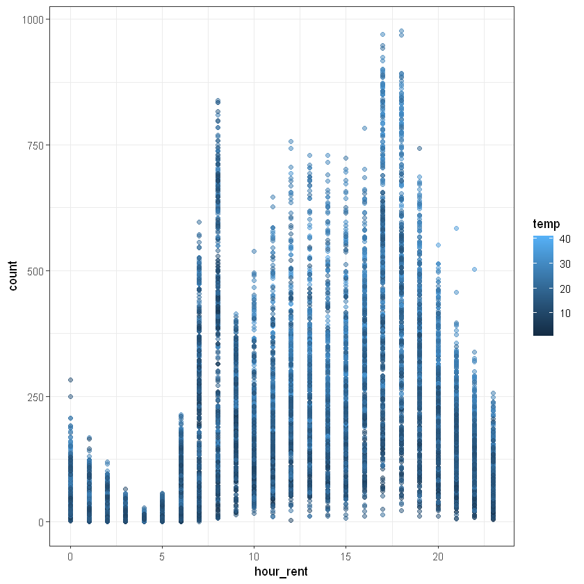

# install.packages("mice")3 Лінійна регресія. Прокат велосипедів
Курс: “Математичне моделювання в R”
Перевірити матеріали лекції!!!
Розділ про прогноз з кроком 10-30. Втрачено окремі комірки коду.
3.1 Dataset overview
Source: https://www.kaggle.com/c/bike-sharing-demand/data
Dataset description:
You are provided hourly rental data spanning two years. For this competition, the training set is comprised of the first 19 days of each month, while the test set is the 20th to the end of the month. You must predict the total count of bikes rented during each hour covered by the test set, using only information available prior to the rental period.
Data Fields:
datetime- hourly date + timestampseason-- 1 = spring
- 2 = summer
- 3 = fall
- 4 = winter
holiday- whether the day is considered a holidayworkingday- whether the day is neither a weekend nor holidayweather- 1: Clear, Few clouds, Partly cloudy, Partly cloudy
- 2: Mist + Cloudy, Mist + Broken clouds, Mist + Few clouds, Mist
- 3: Light Snow, Light Rain + Thunderstorm + Scattered clouds, Light Rain + Scattered clouds
- 4: Heavy Rain + Ice Pallets + Thunderstorm + Mist, Snow + Fog
temp- temperature in Celsiusatemp- “feels like” temperature in Celsiushumidity- relative humiditywindspeed- wind speedcasual- number of non-registered user rentals initiatedregistered- number of registered user rentals initiatedcount- number of total rentals (It is target variable. We will predict it!)
data <- read.csv("data/bikes.csv")
head(data)| datetime | season | holiday | workingday | weather | temp | atemp | humidity | windspeed | casual | registered | count | |
|---|---|---|---|---|---|---|---|---|---|---|---|---|
| <chr> | <int> | <int> | <int> | <int> | <dbl> | <dbl> | <int> | <dbl> | <int> | <int> | <int> | |
| 1 | 2011-01-01 00:00:00 | 1 | 0 | 0 | 1 | 9.84 | 14.395 | 81 | 0.0000 | 3 | 13 | 16 |
| 2 | 2011-01-01 01:00:00 | 1 | 0 | 0 | 1 | 9.02 | 13.635 | 80 | 0.0000 | 8 | 32 | 40 |
| 3 | 2011-01-01 02:00:00 | 1 | 0 | 0 | 1 | 9.02 | 13.635 | 80 | 0.0000 | 5 | 27 | 32 |
| 4 | 2011-01-01 03:00:00 | 1 | 0 | 0 | 1 | 9.84 | 14.395 | 75 | 0.0000 | 3 | 10 | 13 |
| 5 | 2011-01-01 04:00:00 | 1 | 0 | 0 | 1 | 9.84 | 14.395 | 75 | 0.0000 | 0 | 1 | 1 |
| 6 | 2011-01-01 05:00:00 | 1 | 0 | 0 | 2 | 9.84 | 12.880 | 75 | 6.0032 | 0 | 1 | 1 |
Описова статистика факторів:
summary(data) datetime season holiday workingday
Length:10886 Min. :1.000 Min. :0.00000 Min. :0.0000
Class :character 1st Qu.:2.000 1st Qu.:0.00000 1st Qu.:0.0000
Mode :character Median :3.000 Median :0.00000 Median :1.0000
Mean :2.507 Mean :0.02857 Mean :0.6809
3rd Qu.:4.000 3rd Qu.:0.00000 3rd Qu.:1.0000
Max. :4.000 Max. :1.00000 Max. :1.0000
weather temp atemp humidity
Min. :1.000 Min. : 0.82 Min. : 0.76 Min. : 0.00
1st Qu.:1.000 1st Qu.:13.94 1st Qu.:16.66 1st Qu.: 47.00
Median :1.000 Median :20.50 Median :24.24 Median : 62.00
Mean :1.418 Mean :20.23 Mean :23.66 Mean : 61.89
3rd Qu.:2.000 3rd Qu.:26.24 3rd Qu.:31.06 3rd Qu.: 77.00
Max. :4.000 Max. :41.00 Max. :45.45 Max. :100.00
windspeed casual registered count
Min. : 0.000 Min. : 0.00 Min. : 0.0 Min. : 1.0
1st Qu.: 7.002 1st Qu.: 4.00 1st Qu.: 36.0 1st Qu.: 42.0
Median :12.998 Median : 17.00 Median :118.0 Median :145.0
Mean :12.799 Mean : 36.02 Mean :155.6 Mean :191.6
3rd Qu.:16.998 3rd Qu.: 49.00 3rd Qu.:222.0 3rd Qu.:284.0
Max. :56.997 Max. :367.00 Max. :886.0 Max. :977.0 3.2 Minimal data preprocessing
Перевіримо вибірку на наявність пропусків за допомогою функції md.pattern() з пакету mice:
anyNA(data)
FALSE
suppressMessages(library(mice))
md.pattern(data, F) /\ /\
{ `---' }
{ O O }
==> V <== No need for mice. This data set is completely observed.
\ \|/ /
`-----'
| datetime | season | holiday | workingday | weather | temp | atemp | humidity | windspeed | casual | registered | count | ||
|---|---|---|---|---|---|---|---|---|---|---|---|---|---|
| 10886 | 1 | 1 | 1 | 1 | 1 | 1 | 1 | 1 | 1 | 1 | 1 | 1 | 0 |
| 0 | 0 | 0 | 0 | 0 | 0 | 0 | 0 | 0 | 0 | 0 | 0 | 0 |
There are no missing data! Great for us!
Перетворимо категоріальні змінні до факторів:
data$season <- factor(data$season)
data$holiday <- factor(data$holiday)
data$workingday <- factor(data$workingday)
data$weather <- factor(data$weather)
data$holiday <- factor(data$holiday)
head(data) # preview data| datetime | season | holiday | workingday | weather | temp | atemp | humidity | windspeed | casual | registered | count | |
|---|---|---|---|---|---|---|---|---|---|---|---|---|
| <chr> | <fct> | <fct> | <fct> | <fct> | <dbl> | <dbl> | <int> | <dbl> | <int> | <int> | <int> | |
| 1 | 2011-01-01 00:00:00 | 1 | 0 | 0 | 1 | 9.84 | 14.395 | 81 | 0.0000 | 3 | 13 | 16 |
| 2 | 2011-01-01 01:00:00 | 1 | 0 | 0 | 1 | 9.02 | 13.635 | 80 | 0.0000 | 8 | 32 | 40 |
| 3 | 2011-01-01 02:00:00 | 1 | 0 | 0 | 1 | 9.02 | 13.635 | 80 | 0.0000 | 5 | 27 | 32 |
| 4 | 2011-01-01 03:00:00 | 1 | 0 | 0 | 1 | 9.84 | 14.395 | 75 | 0.0000 | 3 | 10 | 13 |
| 5 | 2011-01-01 04:00:00 | 1 | 0 | 0 | 1 | 9.84 | 14.395 | 75 | 0.0000 | 0 | 1 | 1 |
| 6 | 2011-01-01 05:00:00 | 1 | 0 | 0 | 2 | 9.84 | 12.880 | 75 | 6.0032 | 0 | 1 | 1 |
У наборі даних наявні 3 вихідних параметра: casual,registered,count, де $casual + registered = count$. Здійснимо прогнозcount`. Видалимо змінні, які використовуватися нами не будуть:
#data$casual <- NULL
#data$registered <- NULL
# or with dplyr
suppressMessages(library(dplyr))
data <- data %>% select(-c(casual, registered))
head(data)| datetime | season | holiday | workingday | weather | temp | atemp | humidity | windspeed | count | |
|---|---|---|---|---|---|---|---|---|---|---|
| <chr> | <fct> | <fct> | <fct> | <fct> | <dbl> | <dbl> | <int> | <dbl> | <int> | |
| 1 | 2011-01-01 00:00:00 | 1 | 0 | 0 | 1 | 9.84 | 14.395 | 81 | 0.0000 | 16 |
| 2 | 2011-01-01 01:00:00 | 1 | 0 | 0 | 1 | 9.02 | 13.635 | 80 | 0.0000 | 40 |
| 3 | 2011-01-01 02:00:00 | 1 | 0 | 0 | 1 | 9.02 | 13.635 | 80 | 0.0000 | 32 |
| 4 | 2011-01-01 03:00:00 | 1 | 0 | 0 | 1 | 9.84 | 14.395 | 75 | 0.0000 | 13 |
| 5 | 2011-01-01 04:00:00 | 1 | 0 | 0 | 1 | 9.84 | 14.395 | 75 | 0.0000 | 1 |
| 6 | 2011-01-01 05:00:00 | 1 | 0 | 0 | 2 | 9.84 | 12.880 | 75 | 6.0032 | 1 |
3.3 Exploratory data analysis
Оцінимо звязки між числовими змінними та вихідним показником через кореляцію:
data %>%
select(temp:count) %>%
cor() %>%
as.data.frame()| temp | atemp | humidity | windspeed | count | |
|---|---|---|---|---|---|
| <dbl> | <dbl> | <dbl> | <dbl> | <dbl> | |
| temp | 1.00000000 | 0.98494811 | -0.06494877 | -0.01785201 | 0.3944536 |
| atemp | 0.98494811 | 1.00000000 | -0.04353571 | -0.05747300 | 0.3897844 |
| humidity | -0.06494877 | -0.04353571 | 1.00000000 | -0.31860699 | -0.3173715 |
| windspeed | -0.01785201 | -0.05747300 | -0.31860699 | 1.00000000 | 0.1013695 |
| count | 0.39445364 | 0.38978444 | -0.31737148 | 0.10136947 | 1.0000000 |
Щоб оглянути інформацію про частоту спостежень по сезонах варто скористатися записом:
data %>%
group_by(season) %>%
summarize(n = n())| season | n |
|---|---|
| <fct> | <int> |
| 1 | 2686 |
| 2 | 2733 |
| 3 | 2733 |
| 4 | 2734 |
library(ggplot2)
# llok like we have almost the same count by each season
ggplot(data, aes(season)) +
geom_bar(aes(fill = season)) +
theme_bw()# Holidays plot
data %>%
group_by(holiday) %>%
summarize(n = n())
ggplot(data, aes(holiday)) + geom_bar(aes(fill = holiday)) + theme_bw()| holiday | n |
|---|---|
| <fct> | <int> |
| 0 | 10575 |
| 1 | 311 |
data %>%
group_by(workingday) %>%
summarize(n = n())
# Working dats plot
ggplot(data, aes(workingday)) + geom_bar(aes(fill = workingday)) + theme_bw()| workingday | n |
|---|---|
| <fct> | <int> |
| 0 | 3474 |
| 1 | 7412 |
weather- 1: Clear, Few clouds, Partly cloudy, Partly cloudy
- 2: Mist + Cloudy, Mist + Broken clouds, Mist + Few clouds, Mist
- 3: Light Snow, Light Rain + Thunderstorm + Scattered clouds, Light Rain + Scattered clouds
- 4: Heavy Rain + Ice Pallets + Thunderstorm + Mist, Snow + Fog
# weather plot
ggplot(data, aes(weather)) + geom_bar(aes(fill = weather)) + theme_bw()Переглянемо також залежність між числовими факторами та кількістю прокатів байків. Для температури це матиме запис:
# temp
plot(x=data$temp, y=data$count)ggplot(data, aes(temp, count)) + geom_point() + theme_bw()# atemp
ggplot(data, aes(atemp, count)) + geom_point() + theme_bw()# humidity
ggplot(data, aes(humidity, count)) + geom_point() + theme_bw()# windspeed
ggplot(data, aes(windspeed, count)) + geom_point() + theme_bw()Переглянемо також загальний розподіл частоти замовлень байків на гістограмі:
ggplot(data, aes(count)) + geom_histogram(bins = 25, alpha = 0.5, fill = 'blue', color='black') + theme_bw()При спробі побудувати графік залежності між датою та кількістю замовлень байків ми отримаємо помилку або графік, що не відповідає порядку дат, оскільки на даний момент R не сприймає поле datetime як дату. Перетворимо дату за допомгою функції as.POSIXct():
data$datetime <- as.POSIXct(data$datetime)
ggplot(data, aes(datetime, count)) + geom_point() + theme_bw()Чи можна прослідкувати зміну кількості замовлень в залежності від пори року з цього графіку?
Покращити вигляд графіка можна додавання параметрів у geom_point():
ggplot(data, aes(datetime, count)) + geom_point(aes(color=temp)) + theme_bw()Переглянемо як час оренди байка впливає на кількість замовлень:
ggplot(data, aes(format(datetime, "%H"), count)) +
geom_point(aes(color=temp), alpha = 0.5) +
theme_bw()Also, we can add new column to our dataset and use it:
data <- data %>%
mutate(hour_rent = as.numeric(format(datetime, "%H")))
head(data)| datetime | season | holiday | workingday | weather | temp | atemp | humidity | windspeed | count | hour_rent | |
|---|---|---|---|---|---|---|---|---|---|---|---|
| <dttm> | <fct> | <fct> | <fct> | <fct> | <dbl> | <dbl> | <int> | <dbl> | <int> | <dbl> | |
| 1 | 2011-01-01 00:00:00 | 1 | 0 | 0 | 1 | 9.84 | 14.395 | 81 | 0.0000 | 16 | 0 |
| 2 | 2011-01-01 01:00:00 | 1 | 0 | 0 | 1 | 9.02 | 13.635 | 80 | 0.0000 | 40 | 1 |
| 3 | 2011-01-01 02:00:00 | 1 | 0 | 0 | 1 | 9.02 | 13.635 | 80 | 0.0000 | 32 | 2 |
| 4 | 2011-01-01 03:00:00 | 1 | 0 | 0 | 1 | 9.84 | 14.395 | 75 | 0.0000 | 13 | 3 |
| 5 | 2011-01-01 04:00:00 | 1 | 0 | 0 | 1 | 9.84 | 14.395 | 75 | 0.0000 | 1 | 4 |
| 6 | 2011-01-01 05:00:00 | 1 | 0 | 0 | 2 | 9.84 | 12.880 | 75 | 6.0032 | 1 | 5 |
# the same chart as before
ggplot(data, aes(hour_rent, count)) +
geom_point(aes(color=temp), alpha = 0.5) +
theme_bw()
3.4 Train test split
One more splitting method is based on date. So, we can use first 70% of dataset as train and 30% as test. This method often used for timeseries forecasting. We will use it for linear regression for now.
set.seed(10)
nrow(data)
train_count = ceiling(0.7 * nrow(data))
train_count
test_count = nrow(data) - train_count
test_count
10886
7621
3265
data <- data %>% arrange(datetime) # sort by datetimetrain_data <- data %>% slice_head(n = train_count)
nrow(train_data)
test_data <- data %>% slice_tail(n = test_count)
nrow(test_data)
7621
3265
# lets compare last from train and first from test
tail(train_data)
head(test_data) # ok!| datetime | season | holiday | workingday | weather | temp | atemp | humidity | windspeed | count | hour_rent | |
|---|---|---|---|---|---|---|---|---|---|---|---|
| <dttm> | <fct> | <fct> | <fct> | <fct> | <dbl> | <dbl> | <int> | <dbl> | <int> | <dbl> | |
| 7616 | 2012-05-16 16:00:00 | 2 | 0 | 1 | 1 | 29.52 | 32.575 | 45 | 7.0015 | 446 | 16 |
| 7617 | 2012-05-16 17:00:00 | 2 | 0 | 1 | 1 | 29.52 | 33.335 | 51 | 12.9980 | 873 | 17 |
| 7618 | 2012-05-16 18:00:00 | 2 | 0 | 1 | 1 | 29.52 | 33.335 | 51 | 15.0013 | 846 | 18 |
| 7619 | 2012-05-16 19:00:00 | 2 | 0 | 1 | 1 | 28.70 | 32.575 | 54 | 19.0012 | 590 | 19 |
| 7620 | 2012-05-16 20:00:00 | 2 | 0 | 1 | 1 | 27.06 | 31.060 | 65 | 16.9979 | 459 | 20 |
| 7621 | 2012-05-16 21:00:00 | 2 | 0 | 1 | 1 | 26.24 | 30.305 | 73 | 12.9980 | 393 | 21 |
| datetime | season | holiday | workingday | weather | temp | atemp | humidity | windspeed | count | hour_rent | |
|---|---|---|---|---|---|---|---|---|---|---|---|
| <dttm> | <fct> | <fct> | <fct> | <fct> | <dbl> | <dbl> | <int> | <dbl> | <int> | <dbl> | |
| 1 | 2012-05-16 22:00:00 | 2 | 0 | 1 | 1 | 26.24 | 30.305 | 73 | 11.0014 | 286 | 22 |
| 2 | 2012-05-16 23:00:00 | 2 | 0 | 1 | 1 | 25.42 | 29.545 | 78 | 7.0015 | 133 | 23 |
| 3 | 2012-05-17 00:00:00 | 2 | 0 | 1 | 1 | 24.60 | 28.790 | 78 | 8.9981 | 79 | 0 |
| 4 | 2012-05-17 01:00:00 | 2 | 0 | 1 | 1 | 24.60 | 28.030 | 83 | 11.0014 | 28 | 1 |
| 5 | 2012-05-17 02:00:00 | 2 | 0 | 1 | 1 | 24.60 | 28.790 | 78 | 11.0014 | 16 | 2 |
| 6 | 2012-05-17 03:00:00 | 2 | 0 | 1 | 1 | 24.60 | 29.545 | 73 | 16.9979 | 3 | 3 |
3.5 Model building
Побудуємо напройстішу модель залежності середньої температури за день та кількості орендованих байків:
lm_bike <- lm(count ~ atemp, train_data)
summary(lm_bike)
Call:
lm(formula = count ~ atemp, data = train_data)
Residuals:
Min 1Q Median 3Q Max
-254.42 -93.91 -27.43 65.57 648.09
Coefficients:
Estimate Std. Error t value Pr(>|t|)
(Intercept) -2.0774 4.4973 -0.462 0.644
atemp 7.2602 0.1895 38.311 <2e-16 ***
---
Signif. codes: 0 '***' 0.001 '**' 0.01 '*' 0.05 '.' 0.1 ' ' 1
Residual standard error: 138.4 on 7619 degrees of freedom
Multiple R-squared: 0.1615, Adjusted R-squared: 0.1614
F-statistic: 1468 on 1 and 7619 DF, p-value: < 2.2e-16Спробуємо порахувати кількість орендованих байків для середніх темпертур від 10 до 30 градусів.
Створимо датафрейм з послідовністю елементів 10-30 з кроком 1 та порахуємо за формулою з інформації про модель прогнозовані показники:
Здійснимо прогноз за допомогою функції predict():
#predict_1030$count_model <- predict(lm_bike, newdata = predict_1030)
#predict_1030 %>% head()
# our results are very close, minimal difference is a result of rounding numbers in our formula# how it looks like at chart
#ggplot(predict_1030, aes(atemp, count_model)) +
# geom_point() +
# theme_bw()Побудуємо модель для усіх параметрів моделі окрім дати:
lm_bike <- lm(count~.-datetime, train_data)
summary(lm_bike)
Call:
lm(formula = count ~ . - datetime, data = train_data)
Residuals:
Min 1Q Median 3Q Max
-283.67 -78.72 -25.68 46.27 587.17
Coefficients:
Estimate Std. Error t value Pr(>|t|)
(Intercept) 15.67996 8.85332 1.771 0.0766 .
season2 9.39674 4.59288 2.046 0.0408 *
season3 -40.29356 6.46891 -6.229 4.95e-10 ***
season4 21.14562 4.40422 4.801 1.61e-06 ***
holiday1 -8.46508 8.79408 -0.963 0.3358
workingday1 -4.89327 3.12276 -1.567 0.1172
weather2 2.76675 3.47283 0.797 0.4257
weather3 -31.30849 5.61763 -5.573 2.59e-08 ***
weather4 85.56066 122.62585 0.698 0.4854
temp 1.34075 1.67470 0.801 0.4234
atemp 6.30809 1.48446 4.249 2.17e-05 ***
humidity -1.49856 0.08884 -16.868 < 2e-16 ***
windspeed 0.35086 0.19131 1.834 0.0667 .
hour_rent 6.20760 0.21640 28.685 < 2e-16 ***
---
Signif. codes: 0 '***' 0.001 '**' 0.01 '*' 0.05 '.' 0.1 ' ' 1
Residual standard error: 122.5 on 7607 degrees of freedom
Multiple R-squared: 0.3438, Adjusted R-squared: 0.3427
F-statistic: 306.6 on 13 and 7607 DF, p-value: < 2.2e-16Перевіримо модель на мультиколінеарність:
suppressMessages(library(car))
vif(lm_bike)| GVIF | Df | GVIF^(1/(2*Df)) | |
|---|---|---|---|
| season | 2.941744 | 3 | 1.197018 |
| holiday | 1.076162 | 1 | 1.037382 |
| workingday | 1.072163 | 1 | 1.035453 |
| weather | 1.291207 | 3 | 1.043516 |
| temp | 83.073739 | 1 | 9.114480 |
| atemp | 78.281362 | 1 | 8.847676 |
| humidity | 1.594124 | 1 | 1.262586 |
| windspeed | 1.331723 | 1 | 1.154003 |
| hour_rent | 1.135437 | 1 | 1.065569 |
Виключимо корельовані показники з моделі за принципом - залишити той, що має вищу кореляцію із залежним фактором. У нашому випадку це temp:
lm_bike <- lm(count~.-datetime-atemp, train_data)
summary(lm_bike)
Call:
lm(formula = count ~ . - datetime - atemp, data = train_data)
Residuals:
Min 1Q Median 3Q Max
-297.02 -79.11 -25.60 46.35 585.12
Coefficients:
Estimate Std. Error t value Pr(>|t|)
(Intercept) 26.97221 8.45456 3.190 0.00143 **
season2 9.25257 4.59790 2.012 0.04422 *
season3 -45.22396 6.37114 -7.098 1.38e-12 ***
season4 22.00064 4.40455 4.995 6.02e-07 ***
holiday1 -11.34365 8.77778 -1.292 0.19629
workingday1 -4.86349 3.12625 -1.556 0.11982
weather2 3.02977 3.47616 0.872 0.38346
weather3 -32.19037 5.62008 -5.728 1.06e-08 ***
weather4 88.33390 122.76150 0.720 0.47182
temp 8.34447 0.29736 28.062 < 2e-16 ***
humidity -1.47674 0.08879 -16.632 < 2e-16 ***
windspeed 0.06683 0.17945 0.372 0.70959
hour_rent 6.20731 0.21665 28.652 < 2e-16 ***
---
Signif. codes: 0 '***' 0.001 '**' 0.01 '*' 0.05 '.' 0.1 ' ' 1
Residual standard error: 122.7 on 7608 degrees of freedom
Multiple R-squared: 0.3422, Adjusted R-squared: 0.3412
F-statistic: 329.9 on 12 and 7608 DF, p-value: < 2.2e-16Далі побудуємо модель на основі алгоритму stepwise та порівняємо з поточними характеристиками моделі.
Створимо моделі для проходів у два боки:
start_mod <- lm(count ~ 1, data = train_data)
end_mod <- lm(count ~ . - datetime - temp, data = train_data)Запустимо алгоритм функцією step():
lm_bike_stepwise <- step(start_mod,
scope = list(lower = start_mod, upper = end_mod),
direction = "both", trace = 1, steps = 1000)Start: AIC=76488.12
count ~ 1
Df Sum of Sq RSS AIC
+ atemp 1 28114587 145942663 75148
+ hour_rent 1 27600736 146456514 75174
+ humidity 1 15503642 158553609 75779
+ season 3 9131936 164925314 76083
+ weather 3 3537078 170520172 76338
+ windspeed 1 2112392 171944858 76397
<none> 174057250 76488
+ holiday 1 12170 174045081 76490
+ workingday 1 3511 174053739 76490
Step: AIC=75147.53
count ~ atemp
Df Sum of Sq RSS AIC
+ hour_rent 1 20603748 125338915 73990
+ humidity 1 15576942 130365721 74289
+ season 3 5178271 140764392 74878
+ weather 3 2989985 142952678 74996
+ windspeed 1 2889374 143053289 74997
<none> 145942663 75148
+ workingday 1 34765 145907898 75148
+ holiday 1 44 145942619 75150
- atemp 1 28114587 174057250 76488
Step: AIC=73989.67
count ~ atemp + hour_rent
Df Sum of Sq RSS AIC
+ humidity 1 8093815 117245100 73483
+ season 3 2905720 122433195 73817
+ weather 3 2861080 122477834 73820
+ windspeed 1 1038961 124299954 73928
<none> 125338915 73990
+ workingday 1 29661 125309254 73990
+ holiday 1 313 125338602 73992
- hour_rent 1 20603748 145942663 75148
- atemp 1 21117599 146456514 75174
Step: AIC=73482.93
count ~ atemp + hour_rent + humidity
Df Sum of Sq RSS AIC
+ season 3 2375796 114869304 73333
+ weather 3 534048 116711052 73454
+ workingday 1 32372 117212728 73483
<none> 117245100 73483
+ windspeed 1 22790 117222310 73483
+ holiday 1 6750 117238350 73484
- humidity 1 8093815 125338915 73990
- hour_rent 1 13120621 130365721 74289
- atemp 1 22173444 139418544 74801
Step: AIC=73332.92
count ~ atemp + hour_rent + humidity + season
Df Sum of Sq RSS AIC
+ weather 3 525600 114343704 73304
+ workingday 1 42319 114826985 73332
+ windspeed 1 31234 114838071 73333
<none> 114869304 73333
+ holiday 1 2238 114867066 73335
- season 3 2375796 117245100 73483
- humidity 1 7563890 122433195 73817
- atemp 1 12150238 127019542 74097
- hour_rent 1 12266423 127135727 74104
Step: AIC=73303.97
count ~ atemp + hour_rent + humidity + season + weather
Df Sum of Sq RSS AIC
+ windspeed 1 77129 114266576 73301
+ workingday 1 30192 114313512 73304
<none> 114343704 73304
+ holiday 1 3786 114339918 73306
- weather 3 525600 114869304 73333
- season 3 2367348 116711052 73454
- humidity 1 5224113 119567817 73642
- atemp 1 12055477 126399182 74066
- hour_rent 1 12568342 126912046 74097
Step: AIC=73300.82
count ~ atemp + hour_rent + humidity + season + weather + windspeed
Df Sum of Sq RSS AIC
<none> 114266576 73301
+ workingday 1 28599 114237977 73301
+ holiday 1 4334 114262242 73303
- windspeed 1 77129 114343704 73304
- weather 3 571495 114838071 73333
- season 3 2382626 116649202 73452
- humidity 1 4315759 118582335 73581
- atemp 1 12116310 126382885 74067
- hour_rent 1 12411506 126678081 74085# check the summary
summary(lm_bike_stepwise)
Call:
lm(formula = count ~ atemp + hour_rent + humidity + season +
weather + windspeed, data = train_data)
Residuals:
Min 1Q Median 3Q Max
-285.56 -78.70 -25.63 47.20 586.14
Coefficients:
Estimate Std. Error t value Pr(>|t|)
(Intercept) 10.56655 8.35898 1.264 0.2062
atemp 7.46224 0.26269 28.407 < 2e-16 ***
hour_rent 6.21766 0.21626 28.750 < 2e-16 ***
humidity -1.50051 0.08851 -16.954 < 2e-16 ***
season2 9.95637 4.55753 2.185 0.0289 *
season3 -38.55100 6.14342 -6.275 3.68e-10 ***
season4 21.22676 4.40003 4.824 1.43e-06 ***
weather2 2.68041 3.47136 0.772 0.4400
weather3 -31.47986 5.60817 -5.613 2.06e-08 ***
weather4 83.31112 122.62122 0.679 0.4969
windspeed 0.40641 0.17932 2.266 0.0235 *
---
Signif. codes: 0 '***' 0.001 '**' 0.01 '*' 0.05 '.' 0.1 ' ' 1
Residual standard error: 122.5 on 7610 degrees of freedom
Multiple R-squared: 0.3435, Adjusted R-squared: 0.3426
F-statistic: 398.2 on 10 and 7610 DF, p-value: < 2.2e-16\(R^2\) increses!
Об’єднаємо для наочності коефіцієнти у один датафрейм:
lm_coefs_def <- data.frame(lm_name = names(lm_bike$coefficients),
name = lm_bike$coefficients,
row.names = c() # cleaning rownames
)
lm_coefs_def| lm_name | name |
|---|---|
| <chr> | <dbl> |
| (Intercept) | 26.97221255 |
| season2 | 9.25256711 |
| season3 | -45.22395805 |
| season4 | 22.00064078 |
| holiday1 | -11.34364536 |
| workingday1 | -4.86348665 |
| weather2 | 3.02977126 |
| weather3 | -32.19036573 |
| weather4 | 88.33390060 |
| temp | 8.34447012 |
| humidity | -1.47674448 |
| windspeed | 0.06683245 |
| hour_rent | 6.20730753 |
lm_coefs_sw <- data.frame(lm_name = names(lm_bike_stepwise$coefficients), name = lm_bike_stepwise$coefficients, row.names = c())
lm_coefs_sw| lm_name | name |
|---|---|
| <chr> | <dbl> |
| (Intercept) | 10.5665521 |
| atemp | 7.4622378 |
| hour_rent | 6.2176579 |
| humidity | -1.5005074 |
| season2 | 9.9563690 |
| season3 | -38.5510028 |
| season4 | 21.2267554 |
| weather2 | 2.6804117 |
| weather3 | -31.4798561 |
| weather4 | 83.3111193 |
| windspeed | 0.4064147 |
# lets combine coefficients from both models
lm_coefs <- merge(lm_coefs_def, lm_coefs_sw, by = "lm_name", X.all = T, X.all = T)
colnames(lm_coefs) <- c("variable", "lm", "lm_sw")
lm_coefs| variable | lm | lm_sw |
|---|---|---|
| <chr> | <dbl> | <dbl> |
| (Intercept) | 26.97221255 | 10.5665521 |
| hour_rent | 6.20730753 | 6.2176579 |
| humidity | -1.47674448 | -1.5005074 |
| season2 | 9.25256711 | 9.9563690 |
| season3 | -45.22395805 | -38.5510028 |
| season4 | 22.00064078 | 21.2267554 |
| weather2 | 3.02977126 | 2.6804117 |
| weather3 | -32.19036573 | -31.4798561 |
| weather4 | 88.33390060 | 83.3111193 |
| windspeed | 0.06683245 | 0.4064147 |
Як бачимо моделі мають незначні відмінності.
3.6 Model errors analysis
Запишемо у train набір даних модельовані значення count та похибки:
train_data$predicted <- lm_bike$fitted.values
train_data$residuals <- lm_bike$residuals
head(train_data)| datetime | season | holiday | workingday | weather | temp | atemp | humidity | windspeed | count | hour_rent | predicted | residuals | |
|---|---|---|---|---|---|---|---|---|---|---|---|---|---|
| <dttm> | <fct> | <fct> | <fct> | <fct> | <dbl> | <dbl> | <int> | <dbl> | <int> | <dbl> | <dbl> | <dbl> | |
| 1 | 2011-01-01 00:00:00 | 1 | 0 | 0 | 1 | 9.84 | 14.395 | 81 | 0.0000 | 16 | 0 | -10.534505 | 26.534505 |
| 2 | 2011-01-01 01:00:00 | 1 | 0 | 0 | 1 | 9.02 | 13.635 | 80 | 0.0000 | 40 | 1 | -9.692918 | 49.692918 |
| 3 | 2011-01-01 02:00:00 | 1 | 0 | 0 | 1 | 9.02 | 13.635 | 80 | 0.0000 | 32 | 2 | -3.485611 | 35.485611 |
| 4 | 2011-01-01 03:00:00 | 1 | 0 | 0 | 1 | 9.84 | 14.395 | 75 | 0.0000 | 13 | 3 | 16.947885 | -3.947885 |
| 5 | 2011-01-01 04:00:00 | 1 | 0 | 0 | 1 | 9.84 | 14.395 | 75 | 0.0000 | 1 | 4 | 23.155192 | -22.155192 |
| 6 | 2011-01-01 05:00:00 | 1 | 0 | 0 | 2 | 9.84 | 12.880 | 75 | 6.0032 | 1 | 5 | 32.793480 | -31.793480 |
Візуалізуємо відхилення моделі:
plot_data <- train_data[1:100,]ggplot(plot_data, aes(x = c(1:nrow(plot_data)), y = as.numeric(count))) +
geom_segment(aes(xend = c(1:nrow(plot_data)), yend = predicted), alpha = .2) +
geom_point(aes(color = residuals), size = 2) +
scale_color_gradient2(low = "blue", mid = "white", high = "red") +
guides(color = FALSE) +
geom_point(aes(y = predicted), shape = 1, size = 2) +
geom_hline(yintercept=0.5, linetype="dashed", color = "red") +
theme_bw()Warning message:
"`guides(<scale> = FALSE)` is deprecated. Please use `guides(<scale> = "none")` instead."Lets check the same for test data
First we need to predict values:
test_data$predicted <- predict(lm_bike, newdata = test_data)
head(test_data)| datetime | season | holiday | workingday | weather | temp | atemp | humidity | windspeed | count | hour_rent | predicted | |
|---|---|---|---|---|---|---|---|---|---|---|---|---|
| <dttm> | <fct> | <fct> | <fct> | <fct> | <dbl> | <dbl> | <int> | <dbl> | <int> | <dbl> | <dbl> | |
| 1 | 2012-05-16 22:00:00 | 2 | 0 | 1 | 1 | 26.24 | 30.305 | 73 | 11.0014 | 286 | 22 | 279.8139 |
| 2 | 2012-05-16 23:00:00 | 2 | 0 | 1 | 1 | 25.42 | 29.545 | 78 | 7.0015 | 133 | 23 | 271.5277 |
| 3 | 2012-05-17 00:00:00 | 2 | 0 | 1 | 1 | 24.60 | 28.790 | 78 | 8.9981 | 79 | 0 | 122.0506 |
| 4 | 2012-05-17 01:00:00 | 2 | 0 | 1 | 1 | 24.60 | 28.030 | 83 | 11.0014 | 28 | 1 | 121.0080 |
| 5 | 2012-05-17 02:00:00 | 2 | 0 | 1 | 1 | 24.60 | 28.790 | 78 | 11.0014 | 16 | 2 | 134.5991 |
| 6 | 2012-05-17 03:00:00 | 2 | 0 | 1 | 1 | 24.60 | 29.545 | 73 | 16.9979 | 3 | 3 | 148.5908 |
# resulduals calculation
test_data$residuals <- test_data$count - test_data$predicted
head(test_data)| datetime | season | holiday | workingday | weather | temp | atemp | humidity | windspeed | count | hour_rent | predicted | residuals | |
|---|---|---|---|---|---|---|---|---|---|---|---|---|---|
| <dttm> | <fct> | <fct> | <fct> | <fct> | <dbl> | <dbl> | <int> | <dbl> | <int> | <dbl> | <dbl> | <dbl> | |
| 1 | 2012-05-16 22:00:00 | 2 | 0 | 1 | 1 | 26.24 | 30.305 | 73 | 11.0014 | 286 | 22 | 279.8139 | 6.186142 |
| 2 | 2012-05-16 23:00:00 | 2 | 0 | 1 | 1 | 25.42 | 29.545 | 78 | 7.0015 | 133 | 23 | 271.5277 | -138.527654 |
| 3 | 2012-05-17 00:00:00 | 2 | 0 | 1 | 1 | 24.60 | 28.790 | 78 | 8.9981 | 79 | 0 | 122.0506 | -43.050553 |
| 4 | 2012-05-17 01:00:00 | 2 | 0 | 1 | 1 | 24.60 | 28.030 | 83 | 11.0014 | 28 | 1 | 121.0080 | -93.008024 |
| 5 | 2012-05-17 02:00:00 | 2 | 0 | 1 | 1 | 24.60 | 28.790 | 78 | 11.0014 | 16 | 2 | 134.5991 | -118.599054 |
| 6 | 2012-05-17 03:00:00 | 2 | 0 | 1 | 1 | 24.60 | 29.545 | 73 | 16.9979 | 3 | 3 | 148.5908 | -145.590844 |
plot_data <- test_data[1:100,]ggplot(plot_data, aes(x = c(1:nrow(plot_data)), y = as.numeric(count))) +
geom_segment(aes(xend = c(1:nrow(plot_data)), yend = predicted), alpha = .2) +
geom_point(aes(color = residuals), size = 2) +
scale_color_gradient2(low = "blue", mid = "white", high = "red") +
guides(color = FALSE) +
geom_point(aes(y = predicted), shape = 1, size = 2) +
geom_hline(yintercept=0.5, linetype="dashed", color = "red") +
theme_bw()Warning message:
"`guides(<scale> = FALSE)` is deprecated. Please use `guides(<scale> = "none")` instead."library(modelr)
resids <- data.frame(
R2 = c(rsquare(lm_bike, data = train_data), rsquare(lm_bike, data = test_data)),
MSE = c(mse(lm_bike, data = train_data),mse(lm_bike, data = test_data)),
RMSE = c(rmse(lm_bike, data = train_data), rmse(lm_bike, data = test_data))#,
#MAE = c(mae(lm_bike, data = train_data), mae(lm_bike, data = test_data)), # if needed
#MAPE = c(mape(lm_bike, data = train_data), mape(lm_bike, data = test_data)) # if needed
)
rownames(resids) <- c("train", "test") # give names for rows
resids| R2 | MSE | RMSE | |
|---|---|---|---|
| <dbl> | <dbl> | <dbl> | |
| train | 0.3422443 | 15022.59 | 122.5667 |
| test | 0.2854741 | 40401.94 | 201.0023 |
Conclusion: Test set has less RSquared and Bigger Errors variation. Train dataset is closer, because it built on training data and model include information about data.